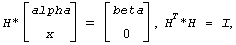
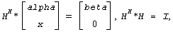
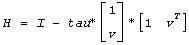
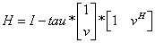

Intel® oneAPI Math Kernel Library Developer Reference - Fortran
Generates an elementary reflector (Householder matrix).
call slarfg( n, alpha, x, incx, tau )
call dlarfg( n, alpha, x, incx, tau )
call clarfg( n, alpha, x, incx, tau )
call zlarfg( n, alpha, x, incx, tau )
The routine ?larfg generates a real/complex elementary reflector H of order n, such that
 for real flavors and
 for complex flavors,
where alpha and beta are scalars (with beta real for all flavors), and x is an (n-1)-element real/complex vector. H is represented in the form
 for real flavors and
 for complex flavors,
where tau is a real/complex scalar and v is a real/complex (n-1)-element vector, respectively. Note that for clarfg/zlarfg, H is not Hermitian.
If the elements of x are all zero (and, for complex flavors, alpha is real), then tau = 0 and H is taken to be the unit matrix.
Otherwise, 1 ≤ tau ≤ 2 (for real flavors), or
1 ≤ Re(tau) ≤ 2 and abs(tau-1) ≤ 1 (for complex flavors).
The data types are given for the Fortran interface.
INTEGER. The order of the elementary reflector.
REAL for slarfg
DOUBLE PRECISION for dlarfg
COMPLEX for clarfg
DOUBLE COMPLEX for zlarfg On entry, the value alpha.
REAL for slarfg
DOUBLE PRECISION for dlarfg
COMPLEX for clarfg
DOUBLE COMPLEX for zlarfg
Array, size (1+(n-2)*abs(incx)).
On entry, the vector x.
INTEGER.
The increment between elements of x. incx > 0.
On exit, it is overwritten with the value beta.
On exit, it is overwritten with the vector v.
REAL for slarfg
DOUBLE PRECISION for dlarfg
COMPLEX for clarfg
DOUBLE COMPLEX for zlarfg The value tau.